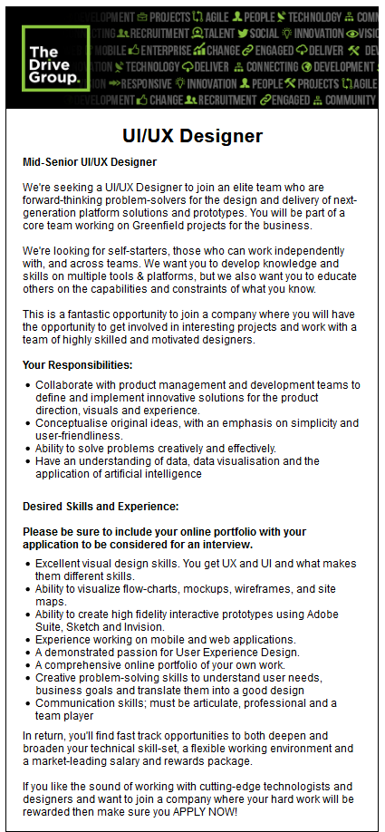
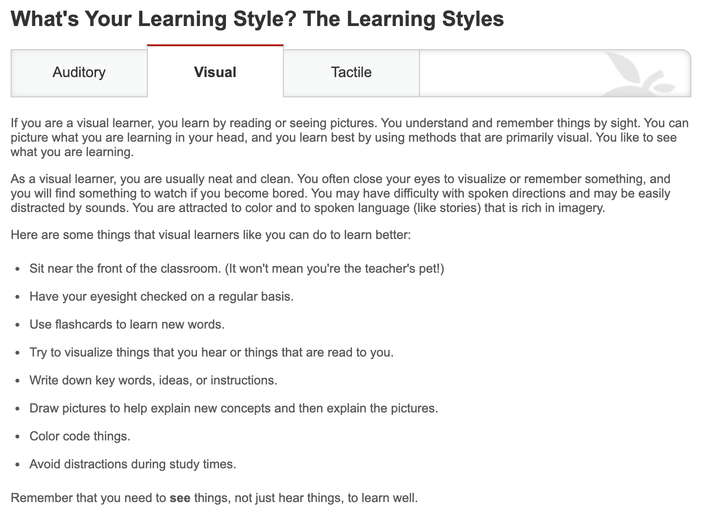
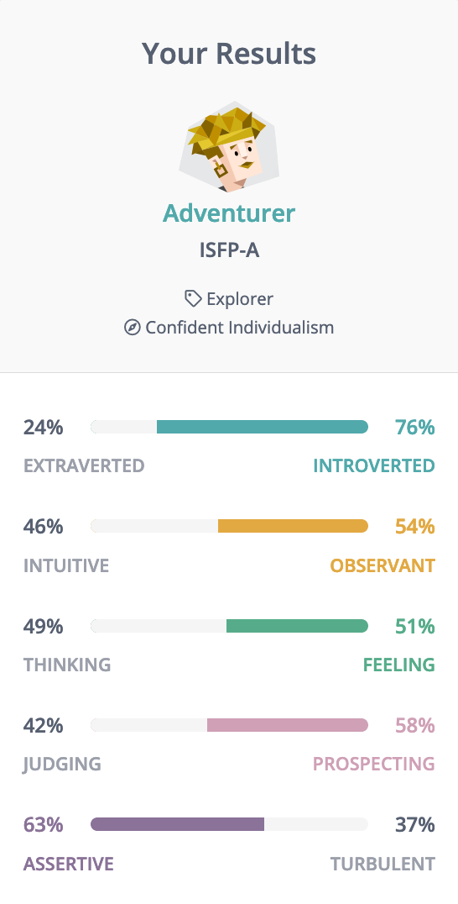
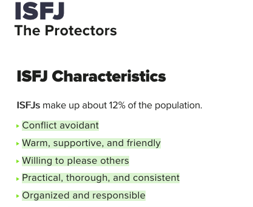

Shortcuts
Personal Information
My Interest in IT
My Dream Job
Personal Profile
Project Idea
Hello, I am Indi Osborne-Thorne. My email is indiosborne@gmail.com and my student number is s3819720.
I am a 19 year old Australian. I completed my HSC in 2018 and after a small break, moved to Sydney with my partner to start our lives! Sadly I have not learnt any other languages beyond English, but as a close second, I have picked up a Canadian accent despite having 0 relation to even an American...
I love the rainy season and spending time with my two kittens.
Interest
I have a lot of interest when it comes to IT, some of my interests include mechanical keyboards, software, the utility of it all, entertainment, education, etc. But my main interest in IT comes from the design aspect of IT. Some examples of this are: the design of hardware (keyboards, monitors, consoles, headphones), software (hud, layout, colour palette, graphics), website design, process design, etc.
I started to become interested in IT when I was growing up with my family as they were all into IT, and all worked in the field (photography, tech repair, hardware purchasing for corporate companies, website programming), I always looked up to my uncles and wanted to do what they were doing. My experience in IT is mainly from personal use as I had access to computers at a young age which gave me time to explore and learn. I got into video games, photo editing, film making, script and terminal expirmenting and from there I took up a Multi-Media class and an Information Processing Technology class in High-School. I learned a lot and I enjoyed learning because IT is what I enjoy. Fast forward to now - I have been working full time for over half a year as a Helpdesk Analyst which is helping me learn new things everyday.
Why RMIT?
I chose RMIT solely looking at the Bachelor of IT, comparing it to the other universities they all seemed a bit dull. RMIT stood out as the layout of the website made all the information very clear. I have friends that are currently studying the same degree and they all recommend it. I also originally planned to go to study on the campus but after getting a job opportunity I decided to still follow my plan by studying here online, after looking at what universities supported online studies I was super happy to find out that RMIT was one of them.
What I expect to learn from my degree:
Coming out of my degree I expect to have learnt a lot of the essential and fundamental processes that relates to IT; Coding, creating websites, networking, data & information, security and privacy, ai, administration, etc. Whether what I learn is detailed or an overview of topics I expect that it will all build up together to give me a solid knowledge basis on IT as a whole with current trends and future trends. I am hoping to be very comfortable and eager to continue on in the IT industry after my studies.
Original job post:
Link
UI/UX Designer

The position of this job is a UI/UX Designer, the role involves designing the UI (user interface) which is physical layout and look of software, whilst also managing the UX (user experience) which is making sure that the intended users of the product/software will find it smooth, easy and efficient for their purpose. This should be done with consideration of the clients/team managers needs for the software and the interface. This role stands out to me due to it being so design focused with a challenging edge to make it work in unison with user experience. It sounds right up my alley and I would also get the opportunity to work in a creative community/team.
The job would require:
Skills I currently have for this job:
How I would gain the necessary skills?
Online learning style test
(Educationplanner.org, 2019)

Your Scores:
Auditory: 30%
Visual: 40%
Tactile: 30%
You are a Visual learner!
1. What do the results of these tests mean for you?
I never knew I was a visual learner, it does make some sense when I think about my current approach to how I study and learn. It is a good thing to know and I will definitely be following some of the tips that the information gives.
2. How do you think these results may influence your behaviour in a team?
When our team does planning and designing it would be best if we had storyboard or some sort of graphics to support the idea since according to the results that is the best way for me to understand it.
3. How should you take this into account when forming a team?
It would be ideal to form a group in which we all have the same learning style so we all understand and can convey our messages easier to each other.
16 Personalities
(16personalities.com, 2019)

Result information:
Link
1. What do the results of these tests mean for you?
The information that supports my result made me smile, they made points that I felt described me well and made me feel a bit more confident and happy about myself. My favourite piece of information I found was “Adventurers enjoy upsetting traditional expectations with experiments in beauty and behavior – chances are, they’ve expressed more than once the phrase “Don’t box me in!”. I feel like I can relate to this and inspires me to live up to the results of the test.
2. How do you think these results may influence your behaviour in a team?
The results helped me figure out what I should and should not be doing in team environment. Based on the results I should bring to the team a good range of ideas that are a bit uncommon, and that I should be confident in my ideas not hide them. It also taught me that if I get bad criticism I should be careful on how I react as my personality type can be affected by this criticism different based on the situation.
3. How should you take this into account when forming a team?
When forming my team I want give input on our project ideas or try to make someone else's ideas more creative and unique.
My Personality Test
(My Personality Test, 2019)

1. What do the results of these tests mean for you?
The points that the results show are all positive which makes me feel proud. I can relate to all the points and I feel like anyone else that knows me would say this is true too. This test also added a interesting point that 12% of the world have these same characteristics. These tests results were also very similar to the ones I recieved in the 16 personalities test which makes them both seem more accurate which is great.
2. How do you think these results may influence your behaviour in a team?
As long as I stick to these traits I should be perfect in a team environment. It does however say that I am conflict avoidant, which is very true, but would not really help if there is conflict in our team. Therefore if there is conflict I might try step out of my personality a bit to try stop it. But all in all I will take these traits and apply them to our group work.
3. How should you take this into account when forming a team?
Hopefully finding some other members that also have some of the key points that I have such as "Practical, thorough, and consistent" and "organized and responsible". Maybe finding another team member that is good at conflict resolution.
To best describe this project I will talk about the steps to get all this setup.
Stage 1 - Intruder alert:
A user notices an intruder, this could be from a personal security system (cameras, motion detectors), they could be at home or away from home.
Stage 2 - System activation:
If I was to develop this project I would first set it up so it activates from command line, I could then further develop this so it can be activated from a smartphone app which would perform the steps in command line for you. The way I have imagined this system to work is your device would ssh into the Raspberry Pi ($ ssh ip), your device would then send instructions to the Raspberry Pi to run a script stored on the Raspberry Pi. This script could be as simple as turning the volume of the Raspberry Pi to maximum, opening an audio file and playing it (the output would be the speakers).
Stage 2 - (Limitations and solutions):
A limitation to this that you may have noticed is ‘how would you ssh if you are not home (therefore you would not be on the same network)?’. I have never done anything like this before but I know that it is possible, you can do this a few different ways. The way I would do this is through port forwarding, port forwarding requires you to change your home router settings to allow connections outside the network. This would be implemented for this project by opening a port on your home wifi and setting a permanent ip for the Raspberry Pi, in which you can then ssh into outside of the network using that ip and port.
Stage 3: Intruder reaction:
This system should work for the majority of intruders, imagine yourself breaking into a house, you would be nervous and anything could lead you to back out. Now imagine a sudden burst of loud noises that would notify both the public, and letting you know that you have been spotted. The user would then shut off the system when the intruder leaves by a follow up script that would turn off the audio. Additionally if the intruder did not back off the next step could be followed up by calling the police.
Evaluation: Following through with this project would give me a lot of new skills and experiences in terms of IT. I would learn and get to experiment with Raspberry Pi’s, port forwarding, app creation, app design, scripting, etc. A drawback to this idea is that the audience population would not be very high, maybe a lot of people would be interested in this being implemented into their households but it requires a lot of initial setup (hardware, software, network), expensive if you do not have the basic hardware of this setup already (speakers, a security system, cables, etc) and it requires a good idea of what you are doing and how to do it (skill set). Therefore this project would be more suited to individuals that are keen for the whole experience and the learning that would come with it, or someone that already has the skills and motivation for the project. The only way this could really turn into a business would be selling all the equipment in kits as a sort of DIY project, or selling the service in which someone would come to your house and setup the whole system. Neither of these ideas are ideal but there could be ways that it could work out.
Extras: Some extra features that could be added to this project would be giving the user an option to upload any audio file they want to the app, which would then push it out to the Raspberry Pi. This would be an important feature as it gives the user more functionality and a chance to have some fun with the system. The project could also be extended by adding more actions for the Raspberry Pi to follow, this could be hooking it up to smart lights (flashing red and blue to imitate a police siren), playing multiple sound tracks (a siren + dark barking sound effects), automatically calling the police or other members of the household to alert them, etc. This could be all up to the user and depends on what the users vision is for their personal system and what hardware they already have which they could implement into their system.
Tools and Technologies: Hardware needed for this project starts off with the Raspberry Pi itself. The Raspberry Pi has a lot of different variants with different features and specs, it doesn't really matter which one is used for this, it just needs internet capability, enough storage to store the audio files, and an audio output jack (you could also use hdmi). The rest of the features that you would need are in all the Raspberry Pi models, models such as: Raspberry Pi models 4-1 (a+, b and b+). Additional hardware includes speakers (at least one), audio jack splitters if using multiple speakers, cables (audio cable, power for pi & speakers), a mobile device to trigger the system and any extra hardware that you want to use e.g. led lights. Software required is the Raspberry Pi OS, for me software to create the app and a script editor (multiple options).
Skills Required: To set this up yourself you would need some knowledge on how to use a Raspberry Pi, there is a lot of information out there and would not take a lot of knowledge to get an idea of what you are doing, I do mention it however since the Raspberry Pi has its on OS. To avoid extra steps of downloading alternative OS’s it would be ideal to use the default OS which is ‘Raspbian’, so it would be required that you learn the basics so you can complete the project.
Basic knowledge of hardware and software setup, since you will be setting up speakers, the Raspberry Pi itself, downloading the app, etc. This mainly comes from experience, but if you are setting up this system you would probably have these skills already.
Getting familiar with your router. Each router has a different management or admin portal in which you can access to change settings, since you will be setting up port forwarding, you would need to find a guide on your router on the steps to setting it up on your router. Most internet providers have these guides, it is just a matter of finding it and following the steps.
The last skill set required would be creating the scripts, since I would be the one that creates the app I am really the only one that would need these skills. Since there are some values that would change from person to person, e.g. what ip you are sshing into, I would need to create a setup stage in the app in which the user would put in all this information.
Outcome: If this project was successful, it would give the user an extra piece of mind when it comes to the security of their home, and a layer of protection to the people of the household. The user that sets this project up would also gain a lot of knowledge about Raspberry Pi’s and their potential. If was to follow through with this project I would also gain a lot of skills when creating the app, and designing it. The impact this project could have is giving people an option for security, motivation to setup personal security, a learning experience and a somewhat smart home setup.
Online learning style test
Educationplanner.org. (2019). Self-Assessments. [online] Available at: http://www.educationplanner.org/students/self-assessments/index.shtml [Accessed 2 Sep. 2019].
HTML Guide with Brackets
Craftie, W. (2019). Getting Started with a Code Editor: Brackets. [online] YouTube. Available at: https://www.youtube.com/watch?v=GN0txxeT46A [Accessed 5 Sep. 2019].
Raspberry Pi Info
Raspberrypi.org. (2019). [online] Available at: https://www.raspberrypi.org/ [Accessed 7 Sep. 2019].
16 Personalities
16personalities.com. (2019). Free personality test, type descriptions, relationship and career advice | 16Personalities. [online] Available at: https://www.16personalities.com/ [Accessed 8 Sep. 2019].
My Personality Test
My Personality Test. (2019). 100% Free Personality Test - Discover Yourself. [online] Available at: https://my-personality-test.com/results/2329009557070045773/personality-type-indicator [Accessed 14 Sep. 2019].